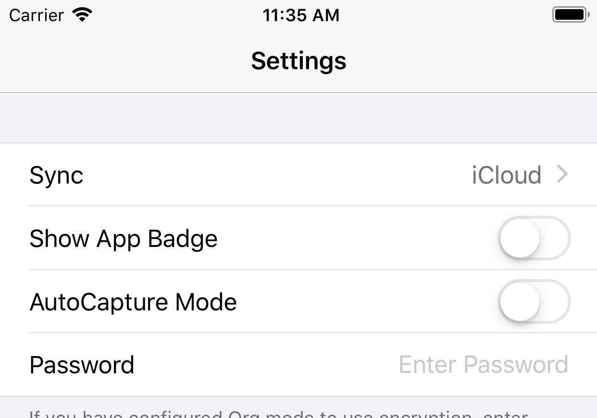
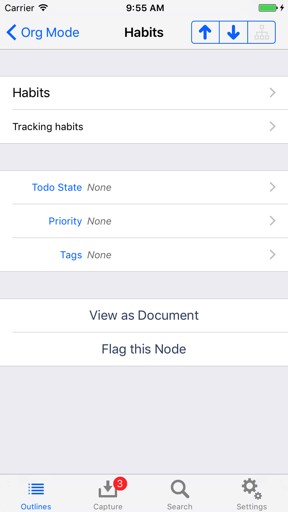
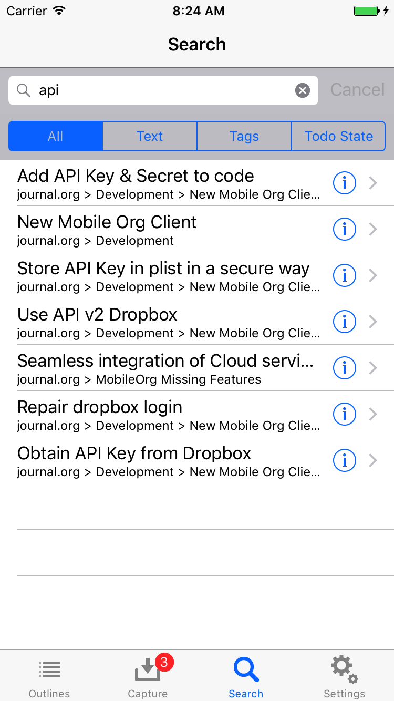
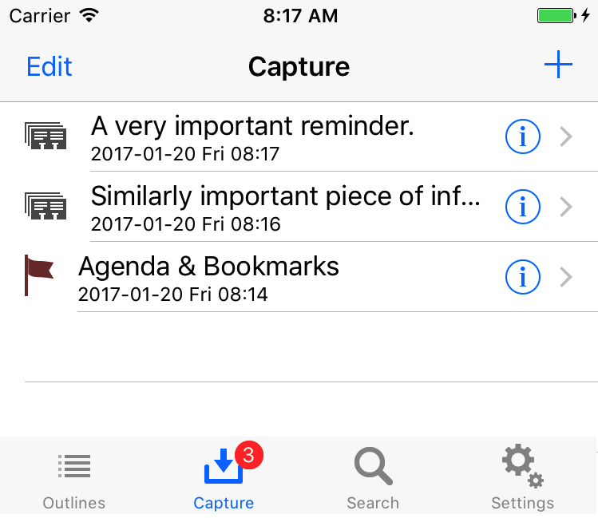

Documentation
Getting Started
MobileOrg uses a WebDAV server or Dropbox to interact with your
Org files. It downloads Org files from the server and uploads
captured notes to a mobileorg.org file on the same server. The
documentation below covers how to get started using Dropbox or set up
a WebDAV account (using free services or your own server), how to
download and finally browse Org files stored on your device.
Be sure to install MobileOrg prior to following these guides. You can find MobileOrg in the App Store on your device by searching for MobileOrg.
Once you are comfortable browsing your Org files, take a look at the following documents to help you get even more from MobileOrg.
Syncing
Using iCloud
Configure iCloud Sync in the mobile app and initiate a sync to create the iCloud Drive folder. The folder will only appear in your iCloud Drive after the initial sync from MobileOrg.

To configure sync from emacs set org-mobile-directory value to point to the path
in your ~/Library/Mobile Documents folder for the iCloud drive folder:
(setq org-mobile-directory "~/Library/Mobile Documents/iCloud~com~mobileorg~mobileorg/Documents")
You can verify the path by opening the iCloud Drive folder in Finder on macOS, look for MobileOrg folder inside, right-click on it, hold Alt and select “Copy “MobileOrg” as Pathname”. The proper path will be copied to the clipboard.
If you encounter issues you can try downloading the files to your device using the Files app, making sure to press the cloud icon for each of the files to download the file locally to your device.
iCloud Sync is a new feature as of v1.7.5, please report issues on Github
Using Dropbox
If you’re not familiar with it already, Dropbox provides 2GB of free storage that can be synchronized between multiple devices. MobileOrg can use Dropbox as a transfer backend as an alternative to WebDAV to make setup easier.
To get started with MobileOrg + Dropbox:
- You must first setup an account on https://www.dropbox.com
- Open MobileOrg, go to Settings, choose the Dropbox button at the top. Enter your email address and password, then click ‘Log in to Dropbox’.
- If login was successful, please proceed. Otherwise, correct your credentials/make sure you have network access, and retry.
- Upon successful login, a new folder,
~/Dropbox/Apps/MobileOrgwill automatically be created. - You should edit your Org mode configuration to contain something like this:
;; Set to the location of your Org files on your local system
(setq org-directory "~/org")
;; Set to the name of the file where new notes will be stored
(setq org-mobile-inbox-for-pull "~/org/flagged.org")
;; Set to <your Dropbox root directory>/MobileOrg.
(setq org-mobile-directory "~/Dropbox/Apps/MobileOrg")
- After restarting emacs/reparsing your configuration, run
org-mobile-push. This will copy your Org files to ~/Dropbox/Apps/MobileOrg, which is where MobileOrg will read from.- You can run
org-mobile-pushby pressingC-c C-x RET pwhilst you are in an Org buffer. - If you use spacemacs just type:
SPC q r
- You can run
- Go back to MobileOrg and click on the Outlines tab at the bottom, then click the Sync button in the upper right.
After capturing notes or making changes on the device to your Org
files, be sure to sync in MobileOrg. Then run org-mobile-pull from
Emacs to integrate your changes. After integrating, you can run
org-mobile-push to make sure MobileOrg has access to the latest
version of your files.
You can certainly automate this using existing elisp functions in emacs if you choose to. See this mailing list discussion for some pointers
NOTE: If you already had a MobileOrg directory in your
~/Dropbox/Apps, a new folder will be created like MobileOrg (1). You
should rename the newly created MobileOrg (1) folder to something that
makes more sense, perhaps MobileOrg-staging before proceeding. Be sure
your org-mobile-directory Emacs variable reflects this change.
ANOTHER NOTE: If you are a Windows user, you will need to have md5sum.exe or sha1sum.exe in your system path before org-mobile-push will succeed. You can find either of them here: http://gnuwin32.sourceforge.net/packages/coreutils.htm See the code here for more info
Setup your WebDAV account
MobileOrg can also use the WebDAV protocol to stay up-to-date and synchronize notes. WebDAV is a set of extensions to HTTP that allow client applications such as MobileOrg to not only read the contents of files on a web server but to write changes to them as well. This allows MobileOrg to have a two-way communications channel with your web server.
What goes on the WebDAV server?
Your Org files, in whatever directory you would like. The examples
below use an org subfolder with a primary Org file named
index.org. Other Org files may reside alongside index.org if you
would like. Syncing with MobileOrg describes how to link
multiple Org files together.
For example, on my Mac, I have my WebDAV share mounted at
/Volumes/private.
$ ls /Volumes/private/org
index.org meetings.org reference.org
These files are then accessible via WebDAV at:
https://www.example.com/private/org/index.org
Choosing a WebDAV server
You have several options to choose from:
- Use a local webdav server
- If you run ownCloud, it supports webdav
- Use a repository service, like https://deveo.com/
- Use your own Apache webserver with mod_dav
- Use your own nginx webserver
Setup of any of these is outside the scope of this documentation although we have a little info here. Your decision will not affect the operation of MobileOrg, but it will determine what settings you will need to input on the Settings page. The Settings page is available at any time by clicking the Settings icon in the lower application toolbar.
There are 3 user-configurable fields:
- Address: This is the complete URL to an index.org file on a WebDAV server. For instance, https://www.example.com/private/org/index.org.
- Username: Your WebDAV share’s username. It is highly recommended to password protect your Org files!
- Password: Your WebDAV share’s password.

If you would like to verify that your WebDAV server is setup correctly, visit the server address in your web browser. If the Org file is displayed or downloaded, you will know that it is working. If not, please check your settings against the examples below. Visit our Support page if you have any trouble.
Using a Local WebDAV Server
The solution you like to choose depends on the operating system you’re on.
MacOS: WebDAV was supported natively in the past by MacOS. Unfortunately it is not more. If you like to setup a WebDAV server on your Mac you might find WebDAVNav Server useful.
Unix:
Linux:
Windows:
Using your own Apache server with mod_dav
Hosting your own WebDAV server is easy if you have access to an Apache webserver. In an appropriate configuration block, add:
DAVLockDB /usr/local/apache/var/DAVLock
<Location /org>
DAV On
AuthType Basic
AuthName "My Org Files"
AuthUserFile /path/to/htpasswd-file
<Limit GET PUT POST DELETE PROPFIND PROPPATCH MKCOL COPY MOVE LOCK UNLOCK>
Require valid-user
</Limit>
</Location>
Be sure to setup some type of authentication, either using AuthUserFile or some other more advanced means, depending on your needs.
Once you have configured your server, point MobileOrg to your index.org file in the Address portion of the Server Config settings.
Using your own nginx server
Tim Dysinger has contributed instructions to setup nginx for MobileOrg use.
#!/bin/sh
# on ubuntu: need some utils & dev libs
sudo apt-get install apache2-utils openssl libssl-dev libpcre3-dev
# compile nginx
cd /tmp
curl http://nginx.org/download/nginx-0.7.64.tar.gz | tar xz
cd nginx*
./configure --with-http_ssl_module --with-http_dav_module \
--prefix=$HOME/nginx
make && make install
# generate an htpasswd file
htpasswd -c ~/.htpasswd $(whoami)
# ssl
openssl genrsa 1024 > ~/nginx/conf/server.key
openssl req -new -x509 -nodes -sha1 -days 365 \
-key ~/nginx/conf/server.key > ~/nginx/conf/server.crt
# configure
cat > ~/nginx/conf/nginx.conf <<EOF
events {
worker_connections 1024;
}
http {
include mime.types;
default_type application/octet-stream;
ssl_certificate server.crt;
ssl_certificate_key server.key;
auth_basic "Restricted";
auth_basic_user_file $HOME/.htpasswd;
dav_methods put delete mkcol copy move;
dav_access user:rw;
create_full_put_path on;
server {
listen 1080;
listen 1443 ssl;
location ~ ^/org(/.*)?$ {
alias $HOME/org/mobile\$1;
}
}
}
EOF
# now you can start nginx
~/nginx/sbin/nginx
# and then sync w/ org-mobile-push/pull & mobileorg sync
# URL: https://<my-nginx-ip-addr>:1443/org/index.org
# and your username and password you used above for htpasswd
Syncing with MobileOrg
Once your server is properly configured, you can click on the Outlines toolbar icon, then click the Sync icon to start fetching your files.
What files are transferred?
Your index.org file is fetched, then any files it links to are
fetched, and so on. For example, in the following case, 4 .org files
will be transferred: index.org, first.org, second.org and
third.org. You may notice third.org is linked to from two different
places, but it is only downloaded once.
Contents of index.org:
* [[file:first.org][An Org file I like]]
* [[file:second.org][Another Org file I like]]
This is a [[file:third.org][link]] in the body text.
Contents of first.org:
* Some text
* [[file:third.org][Link to third.org]]
For the sake of our example, the files second.org and third.org do not
contain any links, so their contents are irrelevant.
The sync process continues until all Org files (and the Org files they link to) have been downloaded.
Are my files transferred every time?
MobileOrg uses a fairly simple caching mechanism to prevent from
unnecessarily downloading the same Org files repeatedly. If a file
named checksums.dat exists in parallel to your index.org file on the
server, only files whose checksums have changed will be re-downloaded.
This file is updated automatically when running org-mobile-push from emacs.
Can I use MobileOrg standalone without using org-mobile-push?
If you do not want to use org-mobile-push you will need to keep the checksums.dat file
up-to-date any time changes are made to your Org files.
Constructing checksums.dat:
$ md5sum * >checksums.dat
$ cat checksums.dat
2b00042f7481c7b056c4b410d28f33cf first.org
41930d894e1a4c2353b85d0b8d96f381 index.org
e5b12e4697d09fa9757d3dc6fcaa5c5b second.org
05eaf1239d84508477cda9d0fa86b1a1 third.org
If your Org file structure consists of subdirectories as well, you can use the following script to generate the checksum file recursively:
find . -name "*.org" -type f -print | sed 's/^\.\///' | xargs md5sum >checksums.dat
MobileOrg recognizes the output of md5sum, md5 (on OSX), shasum and sha1sum.
Browsing your Org files
MobileOrg tries to make it easy to manage Org files both large and small.
Walking the hierarchy
Clicking on the text of a node in the Outline view will drill you down one level deeper into the tree and display that node’s children. To go back to the node you were previously viewing, click the back-arrow button in the upper left corner.
If the node you click on has no children, its details page will be displayed instead. See the next section for more information.
Viewing node details
To view the details for any node, click on the blue disclosure icon on the right of the cell. The details page shows the node title and full body text.
Action Menu
The Action Menu is a context-sensitive menu that allows you to perform actions on nodes, such as marking them as done or viewing them as HTML documents. To bring up the Action Menu, touch and hold your finger on any node’s title text in the Outline view. The Action Menu will slide up and present you with several action buttons.
Document view
While the Outline tree is very useful to quickly browse the outline and find a particular node, it is not the best representation as far as readability of notes is concerned, because the headlines and the body text are structurally separated. For reading, MobileOrg has a Document View which shows an HTML representation of an entire file or subtree, rooted at whatever level you choose to open it at. Document View can be accessed through the Action Menu, or from the details page of a node.

Encryption
MobileOrg supports basic symmetric encryption so that files on your WebDAV server or Dropbox are not stored in plain text.
Be sure you are using at least MobileOrg 1.5+ and Org mode 7.02+.
To configure Org mode to use encryption, use:
;; Enable encryption
(setq org-mobile-use-encryption t)
;; Set a password
(setq org-mobile-encryption-password "mypassword")
Then run org-mobile-push from Emacs after reloading your configuration
file. You should notice that the files in your staging area are
encrypted.
Next, open MobileOrg and enter your encryption password in the Settings tab. Perform a sync, and you are done.
Mastering Search
MobileOrg provides a powerful full-text search, as well as property-based searches for keywords and tags.
Defining your search
The search bar allows you to enter in a string of text to search for. MobileOrg searches for this entire phrase. OR combinations are currently not supported. MobileOrg’s search capability is case-INsensitive.
Beneath the search bar are several scope buttons.

Choosing All performs a full-text search of the following:
- Node title and body text
- Tags
- Keywords (such as TODO or DONE)
Choosing an option other than All narrows the search to one of the above categories.
Capturing Notes
MobileOrg allows you to capture notes whether you are online or off. Notes are uploaded to the server during the next sync.
How do I capture a new note?
To capture a new note, click on the Capture icon in the application toolbar, then click the + icon in the navigation toolbar. Enter in your note, then click Done.

The number of notes waiting to be synced appears as an indicator count by the Capture toolbar icon. After you sync, this count disappears to let you know you have no pending notes.
Where do notes go after a sync?
Notes are appended to the end of the mobileorg.org file on your WebDAV
server. If this file does not exist when you try to sync, MobileOrg
will attempt to create it.
It is generally NOT recommended to reference mobileorg.org as a
link from your index.org file.
When you get back to your desktop computer, you can refile your captured notes into your primary Org mode files by following these steps:
1) In Emacs, initiate a pull by typing M-x org-mobile-pull RET
2) The notes you captured in the MobileOrg app will be appended to a file called `from-mobile.org in your default org directory (variable org-directory). You may specify a different file and location by explicitly setting the variable org-mobile-inbox-for-pull.
3) Refile your notes by switching to the from-mobile.org buffer, and
using C-c C-w Note that the changes you made to existing outline nodes
will simply be automatically applied by the org-mobile-pull
function. Those changes will only appear in from-mobile.org if they
could not be applied (e.g., if the target Org-file changed so much
that the context can no longer be located).
If you are not using the
Org mode integration, you can disregard
these steps and manage the mobileorg.org file yourself using whatever
means you choose.
Integrating with Org mode
Emacs Org mode integrates with MobileOrg by staging files for download to the mobile device, and by automatically processing captured notes and flagged items. For more information see Appendix B of the Org mode manual.
MobileOrg 1.0 requires Org mode 6.32 or greater.